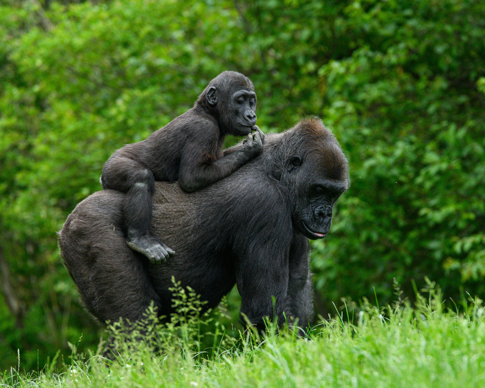

Discover Uganda's crown jewels on an 8 Days Uganda Gorilla & Wildlife Safari with Horizon Tours and Travel. Murchison Falls, Queen Elizabeth, and Bwindi Gorillas.

Pick up and transfer to Murchison Falls National Park
Transfer to Murchison fall National Park via Ziwa Rhino Sanctuary
Transfer to Kibale forest national park
Morning game drive/optional lion tracking experience and afternoon boat cruise
Transfer to Bwindi impenetrable national park
Gorilla trekking in Bwindi impenetrable national park and Transfer to Lake Bunyonyi
Morning Boat Ride and departure
Our company representative will pick you from your hotel in Kampala/Entebbe and embark on about 6 hours to Murchison Falls National Park with a stopover at Ziwa Rhino Sanctuary for rhino tracking and lunch in Masindi town. Proceed to Murchison falls arriving in the afternoon. This is the largest park in Uganda, covering almost 4030 km2, and is one of the most spectacular parks in all of AÃrica. There are the incredible falls from which the park takes its name, rugged savannah, dense woodland and spectacular wildlife. Drive to the Top of the falls where you will have an up-close view of the world's most powerful waterfalls, 'Murchison Falis.' Check in to your hotel, relax, have dinner and overnight stay at Pakuba Safari Lodge (Midrange)
A full day of game viewing at Murchison; begin with a morning game drive, on the lookout for elephant, buffalo, giraffe, antelope, lion, leopard and jackal. If luck is really on our side, we may encounter one of Murchison's few cheetahs. In the afternoon, you will take a boat trip to the base of the 43m high falls. This is also a goud opportunity to spot a few of Murchison's 460 bird species including the shoebill stork and goliath heron. You will also see one of Africa's densest hippo and crccodile populations. Dinner and overnight at Pakuba Safari Lodge (Midrange)
On the third day of the & days Uganda safari, you will nave breakfast and your driver guide will pick you up to start the journey to Kibale forest national-parK aiso known as the primate capital. The journey takes about 5 to 6 hours' drive with a stopover for lunch in Kagadi and continue the journey to the park with great views of the beautiful scenery, landscape, countryside, tea and banana plantations, crater lakes, Rwenzori Mountain peaks among others. Upon arrival in the park, you will check into the lodge for an evening relaxation, dinner and overnight stay at Chimpanzee Guesthouse- Midrange
After an early breakfast on the fourth day of the 8 days Uganda safari, you will meet up with your driver guide to transfer to Kanyanchu visitors Centre for a briefing about the rules and regulations to follow during trekking. After the briefing you will be ailocated a habituated chimpanzee family to trek and a park guide who is well conversant with trails in the forest. Trekking of chinmpanzees in Kibale national park takes about 30 minutes to 4 hours depending on where the chimpanzees are located and during trekking, you will be able to view other primates such as black and white colobus monkeys, blue monkeys, grey cheeked mangabey, I' hoest monkeys, view variety of bird species, different plant and tree species among others. Once the chimpanzees are located you will be allowed to spend one hour with them in their natural habitat which gives you a chance to take photos, record videos, learn about their behaviors, habits, watch them feed, breastfeed, hunt, fight, play, rest, mate among others. After the one hour encounter with chimpanzees you wll trek back to the park headquarters where you will meet up with your driver guide to return back to the lodge for lunch. Transfer to Queen Elizabeth national park After lunch you will check out of the lodge and meet up with your driver guide to transfer to Queen Elizabeth national park which is the second largest national park in Uganda. On the way you will enjoy great views of farmlands, traditional homesteads, crater lakes, Rwenzori mountain ranges among others. Upon arrival in Queen Elizabeth national park, you will go for an optional evening game drive where you will be able to view different animals like buffaloes, elephants, Uganda kobs, waterbucks among others going back to their resting areas. After the evening game drive you will drive to the lodge for dinner and overnight stay at Elephant hab lodge-midrange
Morning game drive/ lion tracking experience After an early breakfast on the fourth day of the & days Uganda safari, your driver guide will pick you up from the lodge to go for a morning game drive or optional lion tracking experience in the park. During the game drive which is commonly done in Kasenyi plains you will be able to view animals like buffaloes, Uganda kobs, elephants, waterbucks, warthogs, bush bucks and predators like lions, leopards, hyenas among others if you are lucky. After the game drive you will drive back to the lodge for lunch. Afternoon boat cruise After lunch you will go for an interesting boat cruise at Kazinga channel a water channel that connects Lake Edward and Lake George. During the boat cruise which takes about 2 hours you will enjoy great views of animals like elephants, buffaloes, warthogs, waterbucks among others drinking water along the shores, view large concentrations of hippo and Nile crocodiles in water, aquatic bird species such as cormorants, kingfishers, fish eagles, hornbills among others. After the boat cruise you will return to the lodge for dinner and overnight as above.
On the sixth day of the 8 days Uganda safari, you will have an early breakfast, check out of the lodge and meet up with your driver guide to transfer to Bwindi inpenetrable national park in southwestern Uganda. On the way you will have a stopover at Ishasha sector in the southern part of Queen Elizabeth national park where you will be able to view the famous tree climbing lions which will be lazily lying up in acacia/ fig tree branches. You will also be able to view other animals like Uganda kobs, waterbucks, buffaloes, elephants, hippos and some bird species. After the game drive in Ishasha sector you will have lunch and then proceed to Bwindi impenetrable national park and upon arrival you will check into the lodge for dinner and overnight stay at Gorilla Mist Lodge-midrange
Gorilla trekking, After an early breakfast on the seventh day of the 8 days Uganda safari, you will carry your packed lunch from the lodge and meet up with your driver guide to transfer to the park headquarters for a briefing about the rules and regulations to follow during trekking. After the briefing you will be allocated a habituated gorilla family to trek and a park guide who is well conversant with different trekking trails. Trekking of mountain gorillas in Bwindi impenetrable national park takes about 30 minutes to 7 hours depending on where the gorillas are located because they like to move from one place to another in search of food. During trekking you will be able to view other primate species such as l'hoest monkeys, chimpanzees, black and white colobus monkeys, different plant species, birds among others. Once the mountain gorillas are found you will be allowed to spend one hour with them in their natural habitat which gives you an opportunity to observe their habits, behaviors, watch gorillas feed, breastfeed, groom young ones, take photos and record the breathtaking moments to show people back home after the safari. After the one hour encounter with the gentle giants you will trek back to the park headquarters where you will be rewarded a certificate for participating in gorilla trekking. Transfer to Lake Bunyonyi After gorilla trekking, you will have packed lunch and then transfer to Lake Bunyonyi via Kabale and arriving in the evening. The lake is known for its beautiful and dazzling natural beauty and is also famous for being one of the deepest lakes in Africa. It is comprised of 29 islands, each with its own rich history. Dinner and overnight stay at Arcadia Lodge (Midrange)
After breakfast on the last day of the 8 days Uganda safari, you will check out of the lodge and head out for a boat cruise on the lake using a local motorized boat. Take a tour to the 'punishment island,' where young girls in the past were abandoned when found pregnant out of wedlock. The lake is also a good spot for birding enthusiasts with over 200 bird species including Herons, the Slender Billed Baglafetch. and the White Tailed Blue Monard among others. Later meet up with your driver guide and journey back to Kampala with lunch en-route. Arrive early evening and upon arrival your driver guide will drop you off at Entebbe international airport for your departure fiight or drop off at any place of advice. End of 8 days Uganda safari